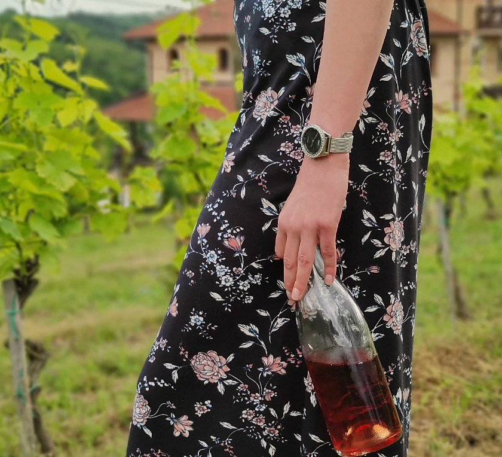
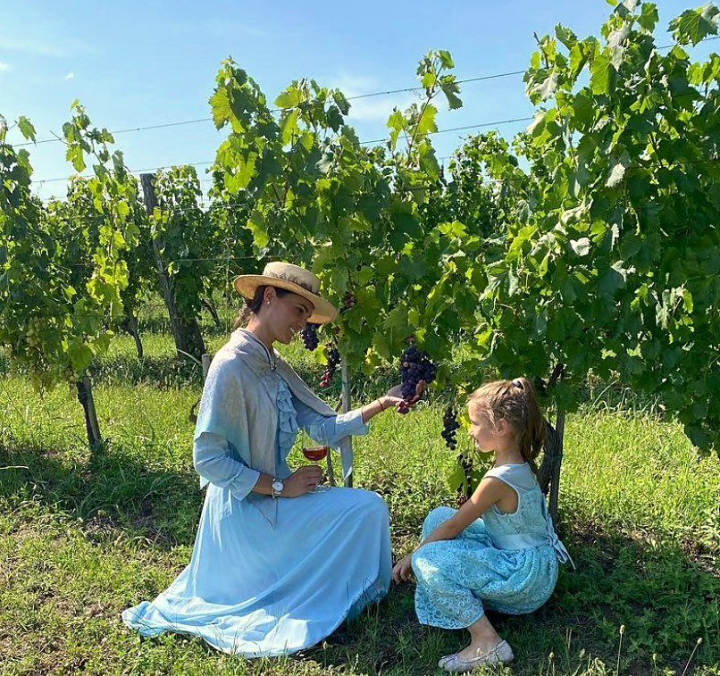
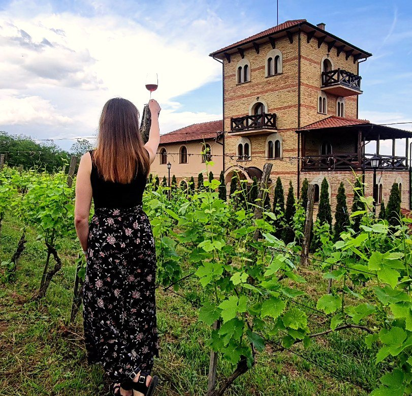
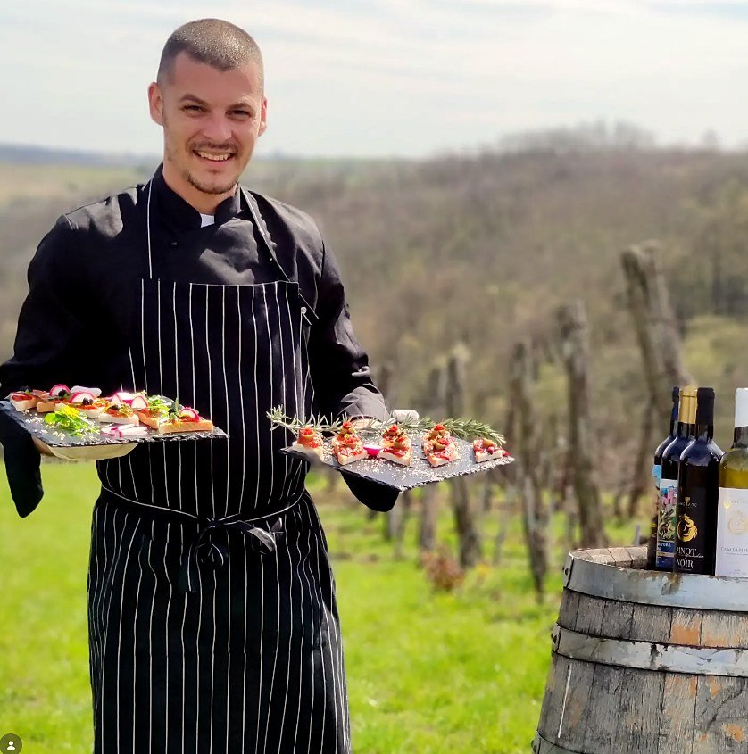
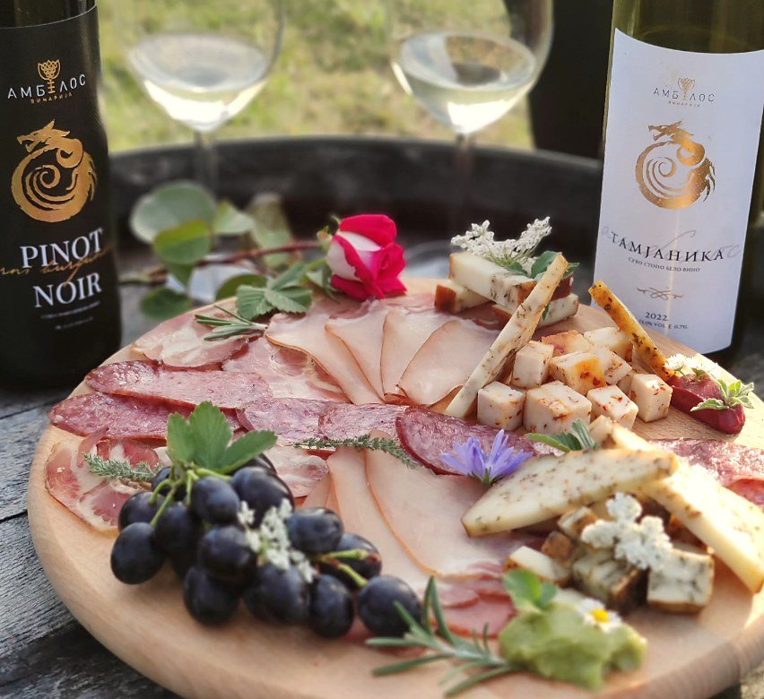
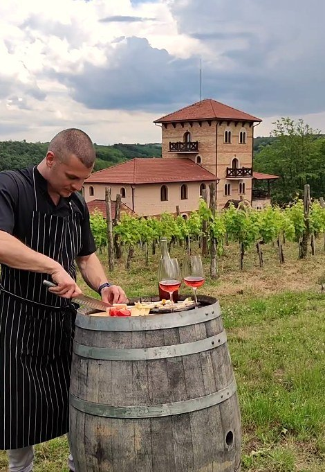
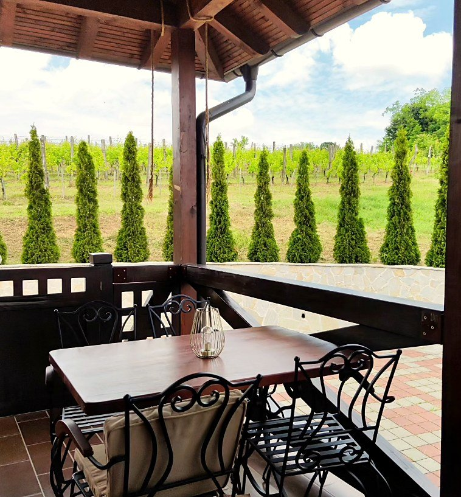
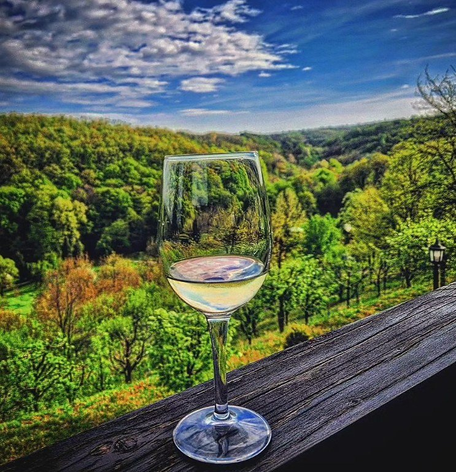
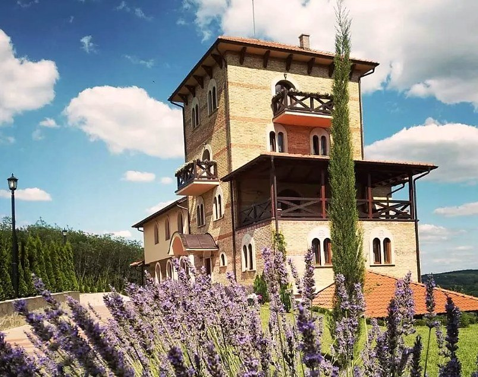

Vinarija se nalazi u sklopu manastira Koporin. Posete i degustacije organizuju se uz prethodnu najavu — za pojedince, porodice i grupe.
Šetnja među čokotima, berba i prvi gutljaj pod otvorenim nebom.



Domaći sir, pršuta i topli zalogaji — spremljeni uz naša vina.



Terasa, tišina brda i čaša pred zalazak.



“Spoj tradicije i prirode oseti se u svakoj čaši — mir manastira i toplina vinograda na jednom mestu.
“Ambijent u kome se odmara duša — loza, hrast i tišina brda oko manastira. Vratićemo se.
“Lepo je znati da vinogradarstvo ovde vuče korene iz manastira — vino s dušom i s pričom.
Do manastira Koporin lako se stiže automobilom, a organizovane grupe dobrodošle su uz najavu — sve do samog manastira.
Za tačne koordinate i pomoć oko dolaska, slobodno nas pozovite.
Otvori u Google Mapama →